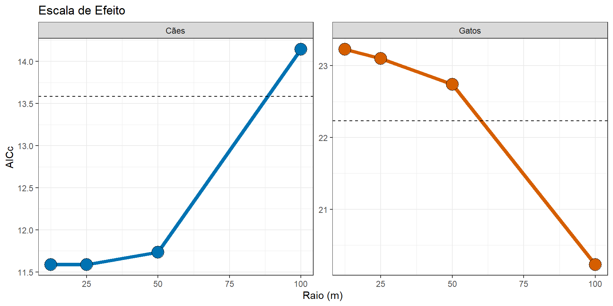
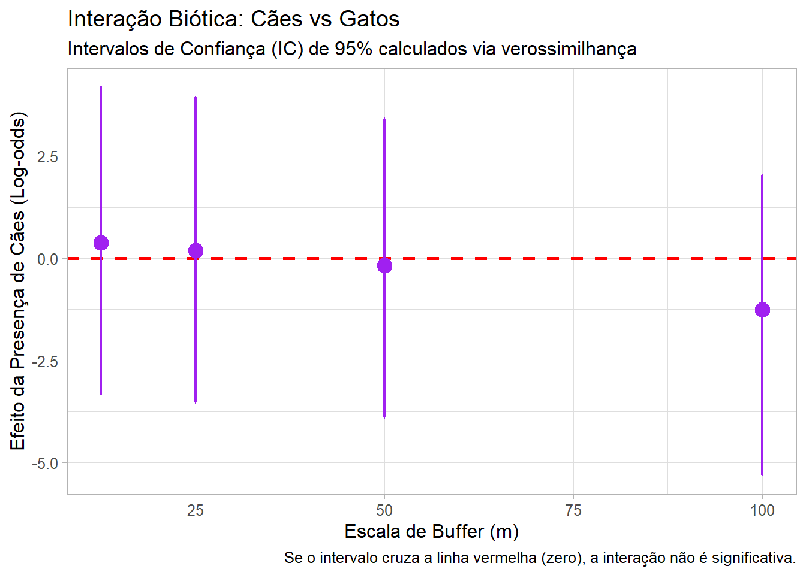

# 1. Spatial Engines
library(terra)
library(sf)
# 2. Data Manipulation & Grammar
library(tidyverse)
library(broom)
# 3. Analytical Models
library(AICcmodavg) # Para comparação de modelos
library(MuMIn)
# 4. Cartography & Visualization
library(patchwork) # Para organizar gráficos3 Escala de Efeito na Ocorrência de Fauna Doméstica
Capítulo em Desenvolvimento
⚠️ Aviso:
Este capítulo é um trabalho em andamento. Os exemplos de código e o texto ainda estão sendo refinados. Você pode encontrar alguns espaços em branco, rascunhos, erros gramaticais, mas estou trabalhando ativamente para finalizá-lo. Feedbacks e sugestões são sempre bem-vindos!
3.1 Introdução
A ecologia de paisagens urbana investiga como a configuração e a composição do habitat influenciam a biodiversidade. No contexto amazônico, áreas como o Campus Marco Zero da UNIFAP (Macapá, Brasil) representam mosaicos complexos onde a fauna doméstica (Canis familiaris e Felis catus) interage com fragmentos remanescentes de cerrado.
Um conceito central aqui é a Escala de Efeito: a escala espacial na qual a relação entre a estrutura da paisagem e a resposta biológica é mais forte. Este capítulo demonstra como identificar essa escala e analisar a coocorrência dessas espécies usando R.
3.2 Configuração do Ambiente e Dados
Utilizaremos o ecossistema tidyverse para manipulação, sf para dados espaciais e pacotes de modelagem estatística.
Dados
# Ler o arquivo com metricas
metricas <- read.csv("data/tabela_metricas_final.csv")
# Ler o arquivo com presença-ausença
especies <- read.csv("data/ep_species_pa.csv")
# Limpeza e padronização de IDs
especies <- especies |>
rename(plot_id = instal_ponto)Preparação da Paisagem As métricas calculadas via landscapemetrics precisam ser organizadas. Focaremos na métrica pland (porcentagem da classe) para a classe “uso humano”, que é frequentemente um preditor forte para espécies domésticas.
# Filtrando a métrica PLAND para áreas de Uso Humano
df_pland_humano <- metricas |>
tidyr::complete(plot_id, metric, class_3, escala_buffer, fill = list(value = 0)) |>
filter(metric == "pland", class_3 == "uso humano") |>
select(plot_id, escala_buffer, value) |>
rename(pland_humano = value)
# Preparação: Deixando os dados em formato "longo" (uma coluna para espécie)
# Isso permite agrupar tudo de uma vez só!
df_longo <- especies |>
select(plot_id, calu, feca) |>
pivot_longer(cols = c(calu, feca), names_to = "especie", values_to = "presenca") |>
left_join(df_pland_humano, by = "plot_id")3.3 Análise da Escala de Efeito
Para identificar a escala de efeito, testamos a ocorrência da espécie contra a métrica da paisagem em diferentes buffers (12.5m, 25m, 50m, 100m). A escala com o menor AIC (Akaike Information Criterion) é considerada a escala de efeito.
# 1. O Fluxo Nest-Map-Unnest (O "Coração" da análise)
# Imagine isso como: Agrupar -> Criar Gavetas -> Rodar Modelo -> Tirar da Gaveta
resultados_modelos <- df_longo |>
group_by(especie, escala_buffer) |>
nest() |> # Cria uma "gaveta" (list-column) para cada combinação
mutate(
# Aplicamos o GLM dentro de cada gaveta
modelo = map(data, ~glm(presenca ~ pland_humano, data = .x, family = binomial)),
# Usamos o broom::glance para extrair estatísticas básicas
resumo = map(modelo, glance),
# Adicionamos o AICc manualmente usando o MuMIn
aicc = map_dbl(modelo, MuMIn::AICc)
) |>
unnest(resumo) |> # Transforma as estatísticas do broom em colunas
group_by(especie) |>
mutate(limiar = min(aicc) + 2) |>
ungroup()Agora comparação dos resultados.
resultados_modelos |>
mutate(especie = ifelse(especie == "calu", "Cães", "Gatos")) |>
ggplot(aes(x = escala_buffer, y = aicc)) +
geom_line(aes(color = especie), linewidth = 1.8) +
geom_point(aes(fill = especie), size = 6, shape = 21) +
geom_hline(aes(yintercept = limiar), linetype = "dashed") +
scale_color_manual(values = c("Cães" = "#0072B2", "Gatos" = "#D55E00")) +
scale_fill_manual(values = c("Cães" = "#0072B2", "Gatos" = "#D55E00")) +
facet_wrap(~ especie, scales = "free_y") +
labs(title = "Escala de Efeito", x = "Raio (m)", y = "AICc") +
theme_bw() +
theme(legend.position = "none")
Observa-se na Figura 3.1 que a ocorrência de cães é melhor explicada por processos locais (12.5 a 50 m), enquanto a ocorrência de gatos responde de forma mais forte à paisagem em uma escala mais ampla (100 m).
3.3.1 Cooccorencias
# 1. Preparação: Unindo dados bióticos (cães e gatos) com a paisagem
df_cooc_pre <- especies |>
select(plot_id, calu, feca) |>
left_join(df_pland_humano, by = "plot_id")
# 2. Modelagem com Intervalos de Confiança de 95%
cooc_robusto <- df_cooc_pre |>
group_by(escala_buffer) |>
nest() |>
mutate(
modelo = map(data, ~glm(feca ~ calu + pland_humano, data = .x, family = binomial)),
# conf.int = TRUE calcula automaticamente os limites inferior e superior
coefs = map(modelo, ~tidy(.x, conf.int = TRUE, conf.level = 0.95))
) |>
unnest(coefs) |>
filter(term == "calu")
# 3. Visualização
ggplot(cooc_robusto, aes(x = escala_buffer, y = estimate)) +
# Adiciona uma área sombreada para incerteza (opcional, mas estético)
geom_hline(yintercept = 0, linetype = "dashed", color = "red", size = 1) +
# geom_errorbar desenha os ICs de 95% robustos
geom_errorbar(aes(ymin = conf.low, ymax = conf.high),
width = 0.2, size = 0.8, color = "purple") +
geom_point(size = 4, color = "purple") +
# Formatação para livro
labs(
title = "Interação Biótica: Cães vs Gatos",
subtitle = "Intervalos de Confiança (IC) de 95% calculados via verossimilhança",
x = "Escala de Buffer (m)",
y = "Efeito da Presença de Cães (Log-odds)",
caption = "Se o intervalo cruza a linha vermelha (zero), a interação não é significativa."
) +
theme_light(base_size = 12)
O gráfico sugere que outras fatores (como a oferta de comida) é uma força mais poderosa na coocorrência do que a competição direta entre as duas espécies. Em todas as escalas testadas (12,5m a 100m), os intervalos de confiança de 95% (barras roxas) cruzam a linha do zero (@fig-scale-effect-co). Isso indica que, estatisticamente, não há evidência de uma interação forte (atração ou repulsão) entre cães e gatos no Campus Marco Zero. O fato de a interação ser nula sugere que ambas as espécies podem estar respondendo de forma independente aos recursos oferecidos pelo campus (comida, abrigo em prédios), onde a disponibilidade de recursos no habitat é o fator principal que dita onde os animais estão, e não a presença um do outro.
Ao interpretarmos os resultados de coocorrência, devemos olhar para dois processos que operam simultaneamente no campus Hotspots de Recursos e Filtragem Ambiental
Hotspots de Recursos (Atração Comum):
A ausência de segregação (intervalos cruzando o zero) sugere que a distribuição de recursos antrópicos (pontos de alimentação voluntária, lixeiras abertas e o entorno do Restaurante Universitário - RU) exerce uma força de atração superior à força de repulsão entre as espécies. Em ecologia urbana, o recurso (comida) frequentemente “força” a sobreposição de nicho espacial, mesmo entre predadores e competidores.Filtragem Ambiental vs. Seleção de Micro-habitat:
Enquanto o “uso humano” (PLAND) atua como um filtro macro (definindo quem consegue viver no campus), a localização fina dos indivíduos é ditada pela oferta de subsídios energéticos. Cães e gatos na UNIFAP não estão apenas “onde há prédios”, eles estão onde há energia disponível. Se os intervalos de confiança são largos, isso indica que essa oferta de recursos é heterogênea e não foi totalmente capturada apenas pela métrica de cobertura do solo.
3.3.2 Rumo ao Desenho Quase-Experimental
Para sair de uma análise puramente descritiva e caminhar para uma inferência causal mais robusta, podemos implementar um desenho quase-experimental com os dados. Um experimento verdadeiro (sortear onde haverá cães ou humanos) é impossível, mas o “quase-experimento” aproveita variações existentes.
A. Amostragem Estratificada por Gradiente de Recurso.
Implementem um desenho de Contraste de Tratamentos com dois grupos. Grupo Tratamento (Alta Oferta): pontos num raio de 50m do RU, lixeiras centrais e pontos de alimentação. Grupo Controle (Baixa Oferta): pontos de vegetação de cerrado remanescente ou mais distante pontos de alimentação. Comparem se a “Escala de Efeito” muda entre esses dois grupos. A hipótese é que, em áreas de alta oferta, a coocorrência é positiva (agregação), e em áreas de baixa oferta, a competição aparece (segregação).
B. Aproveitamento de “Experimentos Naturais” (BACI - Before-After-Control-Impact).
O campus passa por mudanças cíclicas que podem ser tratadas como tratamentos experimentais. Período de Férias vs. Período Letivo, onde a drástica redução na produção de resíduos e na circulação de pessoas no RU durante as férias é um “experimento de remoção de recurso”. Se a segregação entre cães e gatos aumentar durante as férias (quando há menos comida), vocês provam que o recurso humano é o mediador da paz (coexistência) entre as espécies. Comparar Amostragem Estratificada por Gradiente de Recurso nas epocas diferentes.
C. Mapeamento de Pontos de Alimentação como Covariável.
Adicionem uma camada de distância euclidiana até o ponto de recurso mais próximo no modelo (RU, lixeiras centrais e pontos de alimentação). No código R, em vez de usar apenas metricas da paisagem, usem dist_recurso. Dica Teórica: Se o AICc do modelo com dist_recurso for menor que o de pland, vocês demonstram que a ecologia das espécies domésticas na UNIFAP é guiada por pontos focais de energia e não apenas pela estrutura física da paisagem.
3.4 Conclusão
Embora a ocorrência (presença-ausência) não mostre segregação, a análise de abundância relativa (frequência de fotos) poderia revelar padrões diferentes, como uma maior concentração de ambas as espécies em torno de “ilhas de recursos” (ex: Restaurante Universitário).
Avançar da Ecologia de Paisagens descritiva para o desenho quase-experimental permitera que a UNIFAP não seja apenas o local de estudo, mas um laboratório vivo onde testamos teorias sobre como subsídios humanos alteram as regras básicas das interações bióticas na Amazônia urbana.